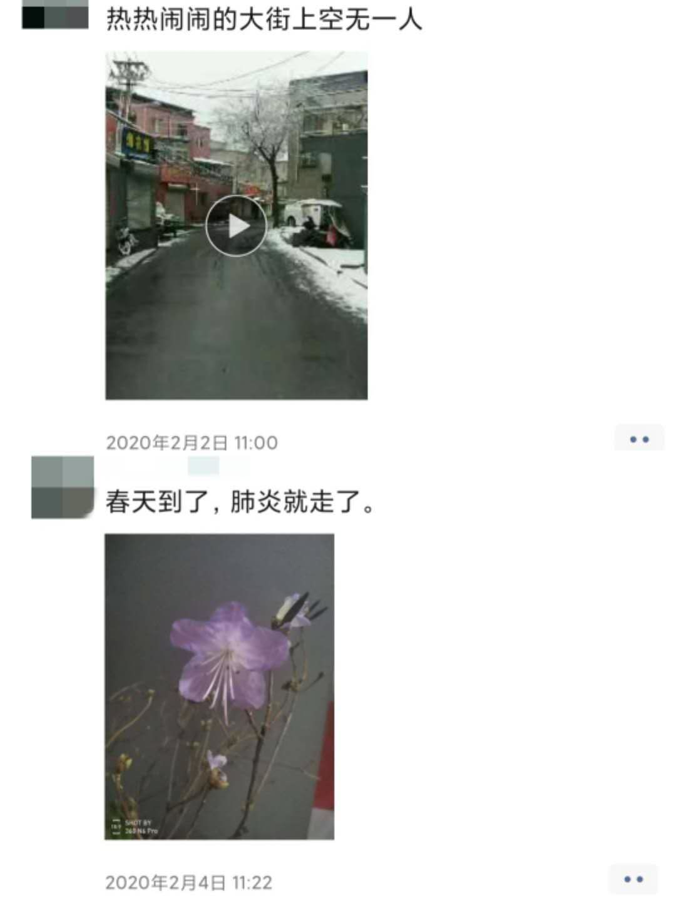

不退缩，有时候和英雄无关
原文链接 备份链接 *************▲************* 疫情期间仍旧开门的药店。 全文共2803字，阅读大约需要5分钟。 药店人可能从没想到，坚持日常营业也能成为一件值得赞赏的事，但目前确是如此，沿街看去，店铺门大多 …
编者按 ▼∇▼∇▼∇
2019年开始，面向农民工子女的实务学堂，和面向女工的木兰花开，合作组织了一个女工写作班，参加的女工，有的是家政工，有的是厨师，有的是销售员。
最近，大家有的在北京，有的在老家，多多少少，也都受到了新冠肺炎疫情的影响。我们就提议，大家可不可以写写自己这段时间的经历，结果，收到了不少文章。
从今天开始，我们将陆续发出来。欢迎大家来阅读，也欢迎大家打赏，打赏会转给作者。你们的鼓励非常重要。谢谢大家！

木兰姐妹在疫情之下的记录
作者：张景云
自我介绍：我是一名家政工，初中毕业就来北京打工，做过很多工作，其中做得最长的工作就是家政服务。
☟
过年前几天，姐妹们还在热热闹闹做牛轧糖，一下子就冷清下来，都回家团圆去了。有点失落。
回家跟儿子计划着今年去看电影，去爬长城，去逛庙会，还计划着去爬香山。好多年没爬过香山了，还是没结婚时爬过两次。
1月23号那天去奥北市场买了点菜和肉，也没怎么说疫情严重，只是说武汉那边传染挺厉害，在新闻上看到了，也没重视。还跟我二舅约好了来我家打麻将。
1月24号就开始说什么的都有，说武汉封城了，口罩卖脱销了，还有的说十几块钱一个口罩，只是听说，但也没传的那样，我在药店看到过15元两包，就是普通的那种口罩。
1月24号中午，我们吃饭的时候，我女儿刘辰无意间说了一嘴，“我可能有病了”，我还训了她一顿，“胡说八道，吃饱了撑的，有什么不好，有病”。我妹妹也说都注意点别感冒了。下午吃完饭就去虫虫家打麻将。她们在看电视。

本文作者张景云与她的女儿刘辰
1月25号(农历)初一下午，我们去打麻将，女儿还在床上躺着翘着二郎腿，她大舅还说她就你舒服到床上一躺。谁也没管她，到晚上她跟我说，“妈妈我发烧了”。我心里咯噔一下，心都提到嗓子眼了。在这个特殊时期发烧，感觉不是很好 ，我赶快给她量体温38度，这可怎么办？
家里有大人的退烧药没小孩的。她没有感冒症状，也不流鼻涕，也不咳嗽，就是嗓子疼。一冬天也没人感冒，就没备感冒药，只有板蓝根。吃了成人的退烧药，减了一半吃的。一晚上也没怎么睡，一直观察她退烧没，隔两三个小时量一次体温，吃了退烧药就退烧了，药劲一过烧就上来了。家里也有什么药，又是特殊时期，怎么办？
这反反复复的发烧，我有点害怕了。第二天我就带着她到药店看看有没有开门，到了药店还真就开着门。但是里面就一个卖药的，老板不在。一问才知道，加微信视频指导买药，买了一百块钱的药。
买完药就去街上转了一圈，超市没开，街上也没人，走过村委会，看到我四舅家的菜店开着门。之前听我妹说四舅回老家了，到菜店一问才知道，疫情严重，他怕回不了北京就没回。
在他们菜店聊了一会，也没注意菜会那么贵，就是觉得过年菜价涨得有点高，谁知道有人买大白菜，说大白菜4块钱一斤！！！蒙了，大白菜4块钱一斤。世纪家家福超市老板也过去聊天，说他大年三十上午到的老家，下午立马又返回来了，孩子都没带回来北京。
买了药吃了，刘辰还是反反复复发烧，都烧到41度了。不行还是去医院吧，隔离就隔离吧，不能一直这样发烧。她也害怕了，说再喝一次退烧药吧，烧退不下去再去医院，又喝了一次退烧药。我又给她用白酒物理降温，耳跟后，前后脖哽，胳肢窝，前心后背，大腿内侧都擦了个遍。尤其是后背都擦出痧了，通红通红的，后来都变成紫的了。这个晚上下半夜，她的烧终于退下去了。扁桃体发炎症还没下去，买的药吃完了，还得去买药。
我又去那家药店买药，没开门，给药店老板发信息，他给我解释在微信里发“买药”，他给我发个临时密码，然后再扫二维码输入临时密码，门锁就开了。
刘辰从(1月25号)初一晚上发烧，到(1月28号)初四才退烧，我都给吓死了。
1月27号(农历)初三还没起床，房东就给我们要身份证户口本办出入证，没有出入证只能出不能进。刚拿走身份证，又要行驶证和车牌号，车也得办证。
房东还一直叮嘱，别让我老公回来。回来也不让回家，在外面隔离十四天。一直关注着新闻，这里发现几例疫情，那里又有几例疫情。武汉那边从几千例又涨到两万多例，真的是人心惶惶的，也不知道疫情什么时候能过去，这个年过的提心吊胆的。

本文作者张景云近期的朋友圈
编辑：欧阳艳琴
制版：林楚虹
-

2018年3月创立于北京昌平，
是一个面向农民工子女的
全日制、非学历职业教育公益项目。
使命和愿景是：
探索打工子弟职业发展新路径，
为好的社会培养“珍贵的普通人”。
招收17岁以上农民工子女
报名咨询：ouzhou1283（欧阳）
捐赠支持请点击底部“阅读原文”
科蚪实务学堂
长按二维码向我转账
受苹果公司新规定影响，微信 iOS 版的赞赏功能被关闭，可通过二维码转账支持公众号。
原文链接 备份链接 *************▲************* 疫情期间仍旧开门的药店。 全文共2803字，阅读大约需要5分钟。 药店人可能从没想到，坚持日常营业也能成为一件值得赞赏的事，但目前确是如此，沿街看去，店铺门大多 …
原文链接 备份链接 邵阳日记 _ 小新 _ _ _ _ _ _ 我的家在湖南省邵阳市邵阳县塘田市镇，1月10日，我从广州的学校回到老家。本来准备好过一个安逸的寒假，结果突如其来的疫情让周围的一切都不再平静。 _ _ _ _ ●口罩● _ …
原文链接 备份链接 这是系列报道的第五篇，发自新疆小城的「个人志」。17 年前，这座城市曾侥幸躲过「非典」，而 17 年后，在这场「新冠肺炎」疫情面前，乐观幻灭了，人人自危且心痛。以此为切口，我们想知道，中国人是从这场疫情开始才失去了乐观 …
原文链接 备份链接 今天是“武汉日常”每日书的第四篇，在孝感的学生写到当地村民自发拦路封村，尽管道路后面的横幅还写着他们希望并且欢迎在外乡亲回家；有在黄石的编剧路过黄石最繁华的步行街，发现那里几乎没有任何动静；有居住在武汉市区自愿帮助陌生 …
原文链接 备份链接 【编者按】首先，祝各位新年安康！ 我们的前方记者正在采访报道新型肺炎疫情，但我们知道，也许你们在更前方。这里，是一位武汉的年轻妈妈除夕发来的日志。中国青年报社正在公开征集原创文字、图片、视频。欢迎通过我们的全媒体平台告 …